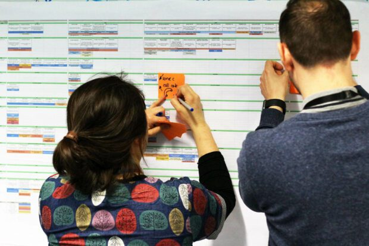

Ecosystem map
About
An ecosystem map — sometimes called a system map — gives a wide-angle view of all the actors, channels, devices, data, and value flows that make up a product or service system, and shows how they connect. Rather than tracing one person's path, it captures the whole field: who exchanges what with whom, which platforms and back-end systems are involved, and where value and information move between them. In service design it is often the artifact that lets a team see the entire system before they commit to designing any single part of it.
When to use
Use an ecosystem map for complex, multi-actor or multi-channel systems, early in a project, to frame the scope of a service and to spot leverage points and dependencies that aren't visible from inside any one touchpoint.
When not to use
Avoid an ecosystem map for simple single-product contexts where the system is trivially small, and don't expect it to substitute for the detailed, experiential view that a journey map provides — the two operate at different altitudes.
References
Examples
Click any example to view full size and visit the original source.
